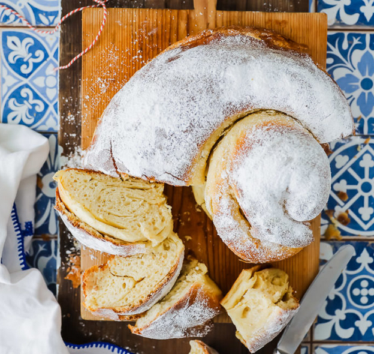

Ensaïmada

Ensaimada de Mallorca - original recipe
Ingredients
- 200ml milk
- 500gr flour
- 2 teaspoons dry yeast
- 100gr sugar
- a pinch of salt
- 2 eggs (whisked)
- 200gr butter (soft, not melted)
- powdered sugar
Steps
- heatup milk
- make dough with flour, dry yeast, sugar, salt, eggs and warmed up milk
- let dough rest for 1-1.5 hours
- knead again for some minutes and roll out to a 50x50cm square
- put on butter on top
- roll like a snail and put in to the fridge for 15min
- take dough out and let it rest for another hour
- put in to the oven for 30mins (180°C two-sided heat)